Warp Big & Bulky · Shopify app · 2026
You bought a couch.
Then you wait for a phone call to schedule it. For anything big and heavy, checkout makes a delivery promise it cannot keep, and the real scheduling happens later, by phone, after your money is gone. I designed and built the Warp app that turns that moment into a real, dated delivery choice inside Shopify.
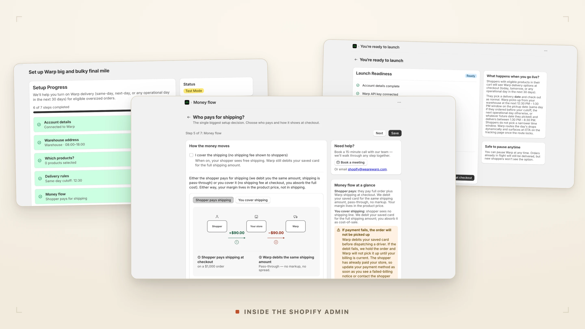
Buy a book and checkout knows what happens next. Buy a sofa and it guesses. Warp puts a real delivery date in the same place a shopper already picks shipping, then books the freight in the background.
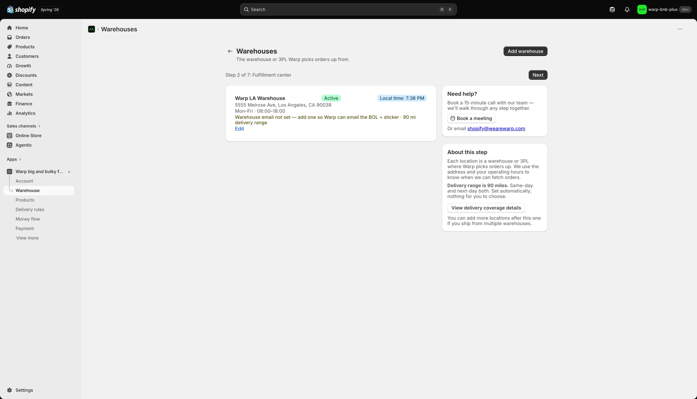
Checkout was built for parcels, not freight.
Everything that makes checkout feel solid was built for parcels. Freight fits none of it.
You get a vague three to five business days, you pay, and a week later a person calls to arrange the real delivery. The part that matters most for something heavy, when it shows up and whether you will be home, is the part checkout waves away.
I bought a couch, and now I wait for someone to call me.
The first customer is the merchant, not the shopper.
It reset the whole project.
In an app that lives inside Shopify, the merchant decides to install it and keep it. If they cannot get through setup, or cannot see how it makes them money in the first minute, no shopper ever reaches the checkout I was fussing over. So I moved the design budget. The merchant's onboarding got the care. The shopper's checkout got calm defaults and nothing to think about.
The other thing the research gave me was mine to carry: for a commerce app, onboarding is the whole experience. A merchant sets it up once and forgets it exists while orders flow in the background. They never get a second chance to be impressed, so whatever friction sits in setup is the product.
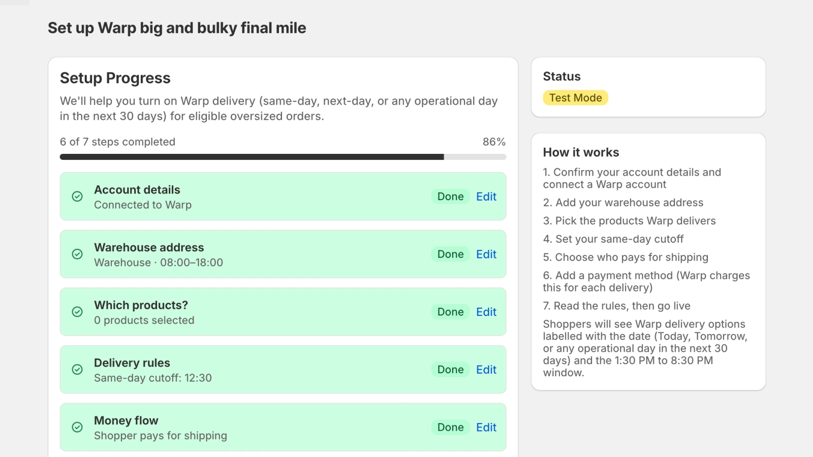
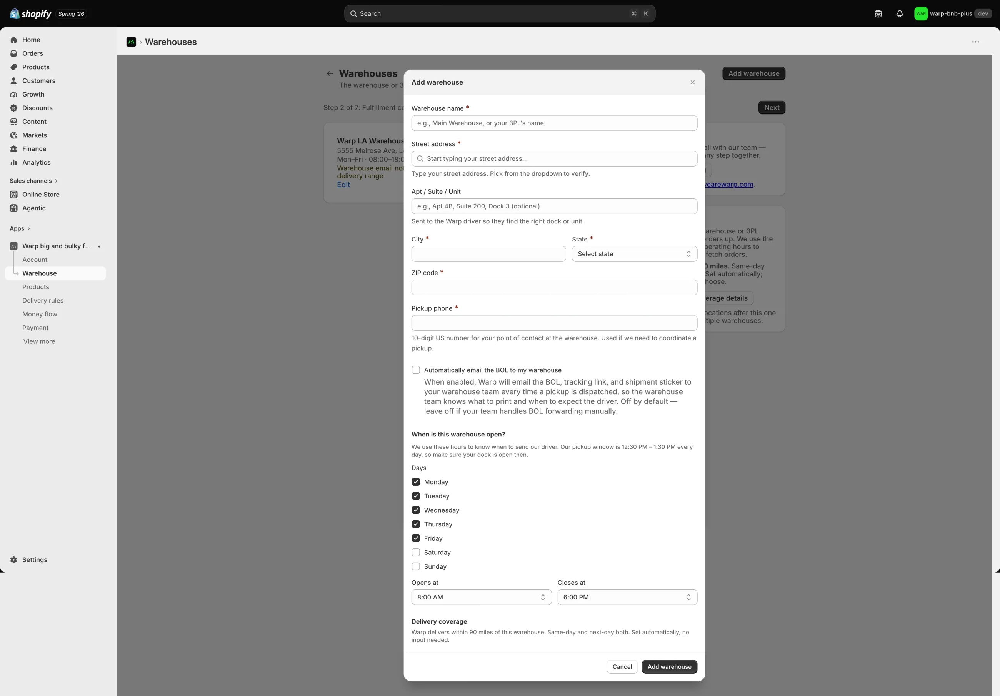
Three surfaces, one delivery promise.
The app lives in three places.
A seven-step setup wizard in the Shopify admin. The rates a shopper sees at checkout. And the quiet operations after purchase, where it books the freight, holds the order until pickup is confirmed, and hands the shopper a tracking page.
The first thing the merchant chooses about their own catalog is which products even qualify for Warp. The screen below is where they say so, and where the hard limits are drawn in the same breath.

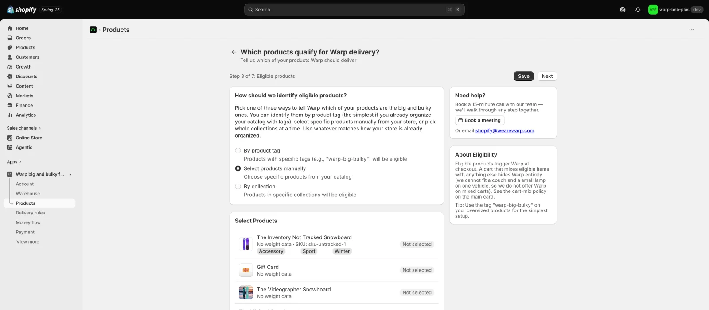
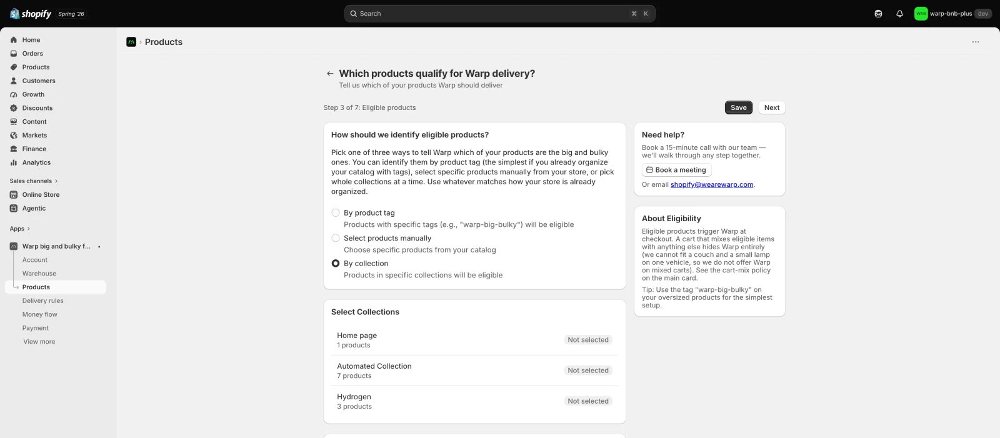
I made the delivery date a property of the shipping rate itself, so "Warp · 07/08" is just another rate Shopify already knows how to show. Scheduling works on every Shopify plan that way, with the richer in-checkout card as a bonus on the plans that support it. It trades a slicker widget for far wider reach, which is the right trade for a wedge.
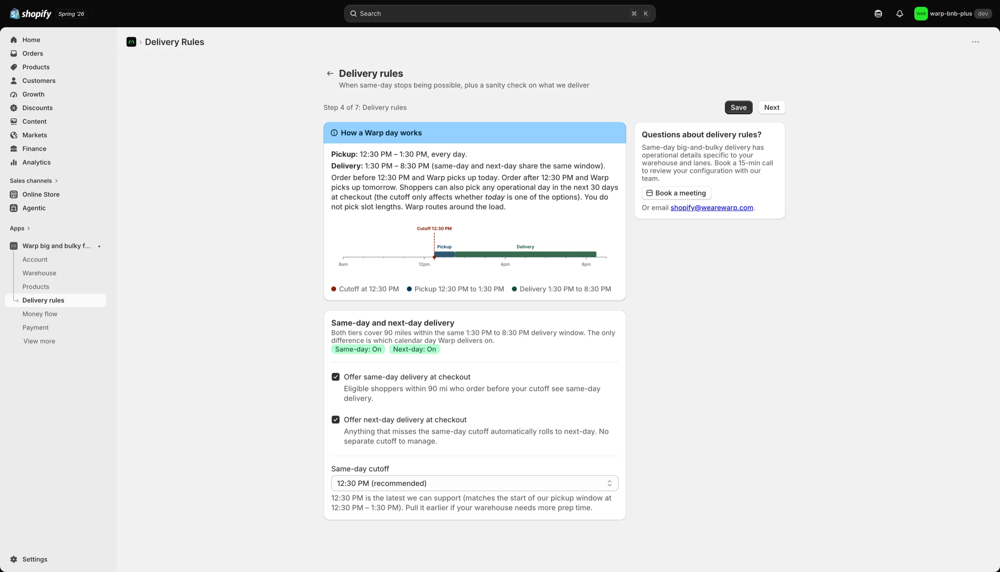
Every label equals what actually happens.
This app moves real money and makes real delivery promises, so a label that does not match reality is worse than something ugly.
Four decisions that shipped, each of them defensible line by line in the code.
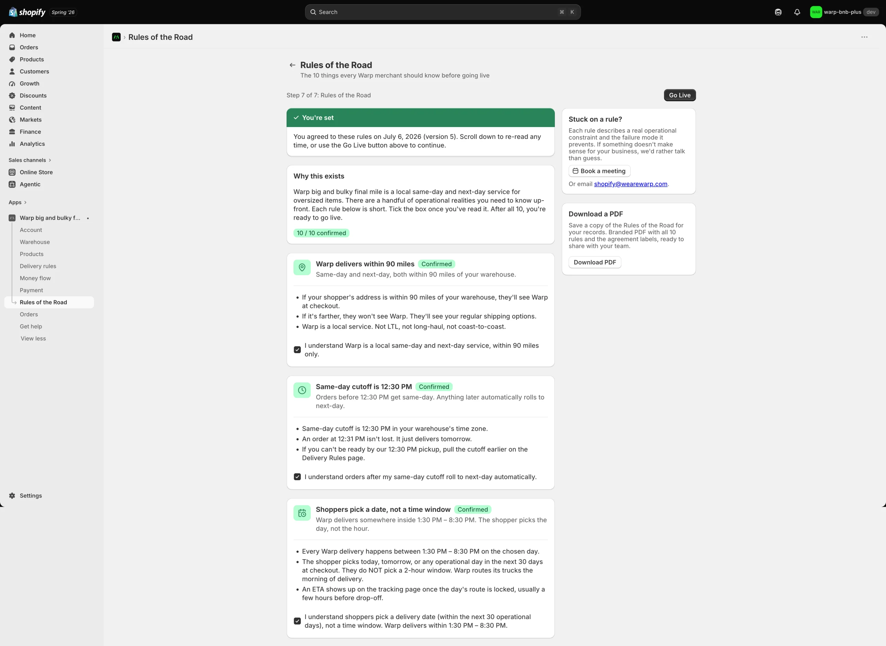
- Ordered
- Booking in progress
- Picked up
- DeliveredBetween 1:30 and 8:30 PM
Rejected six times for a bug that wasn't in the code.
Shopify rejected the app about six times over roughly six weeks, always on the same rule: the checkout extension "did not display." The code was correct, and an audit confirmed it. The real cause took actual debugging to find, and it was never where the rejection pointed.
I had braced for a four to six week queue. Shopify picked it up in under three hours, which told me the submission package was complete. Then it came back with a single rejection: the checkout card rendered nothing. They had tested a Helsinki, euro checkout, where Warp correctly returns no rate, so of course nothing showed. Fast pickup, not a pass.
"Checkout extensions must display properly." I kept re-reading the code that drew the card. It was fine. Chasing a rendering bug in correct code is a special kind of stuck.
Two real failures were sitting in the carrier-service logs the whole time. Shopify sends null for an empty optional field. My schema used a rule that accepts a missing field but rejects a null one. A single null failed the whole check and hid every Warp rate.
One word, plus a regression test that reproduces both logged failures.
In-checkout extensions are a Shopify Plus feature. The demo store had drifted onto a lower plan, so the card could never render for a reviewer, whatever the code did. The earlier plan had written this off as unfixable. It wasn't. Shopify hands you a free Plus development store for exactly this, and an unsaved block previews in the editor but never renders on a live checkout, which was its own quiet trap.
I spun up the free Plus dev store, placed and saved the card on the checkout shipping step, and watched it work. The scheduler card rendered, and four dated Warp rates appeared: 07/07 through 07/10, each at $106.22, with the 1:30 to 8:30 window and the 90-mile note. That is the moment the six-week blocker died.
This card renders only inside a live Shopify Plus checkout, so it is drawn here from the extension source, not captured as a screenshot. $106.22 is that dev store's rate for a test sofa, not a production price.
The fix came from climbing. From the symptom the reviewer named, up to the platform's real rules: a Plus-only surface, an editor preview that is not a live render, and one line of validation that rejected a legal null.None of it was in the code that drew the card.
Built so you can check every number.
None of this rests on my word. It is in the repo, and every number here is something you could run yourself.
I pulled Stripe out of the app entirely. The app is free and the freight is a strict pass-through on the merchant's own Warp account, so handling cards inside the app added a compliance surface for no benefit. The merchant now picks a Warp balance or a card already on file, and the app never touches card data.
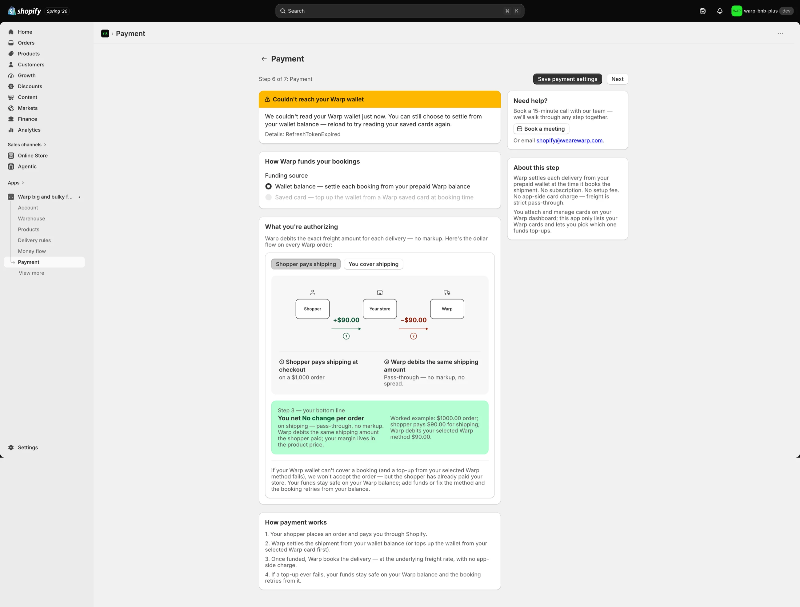
Honest about what it is, and what it isn't.
The app is built, hardened, submitted to Shopify review, and verified working live on a Plus development store. It is not publicly listed, so no real shopper has used it yet. I am precise about that.
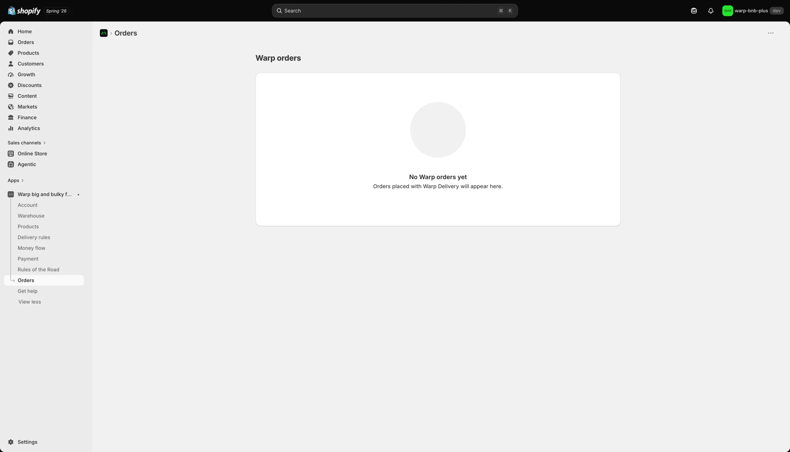
What is real here is the judgment and the craft: taking a founder's whiteboard sketch to a rigorously built, compliance-aware, submitted product, solo, and holding the line on scope and honesty the whole way. That part is true whether or not anyone has installed it yet.
Read the platform before arguing with it.
Half the hard parts here were not design or code. They were understanding what Shopify actually allows, its Plus-only surfaces, its carrier rules, its billing policy, and designing inside that instead of wishing it away. The six weeks I lost were six weeks of arguing with a platform rule instead of reading it.
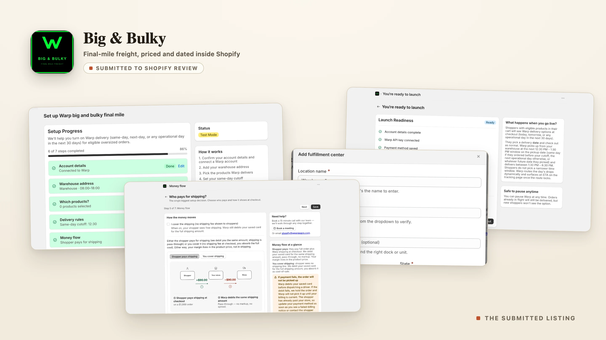